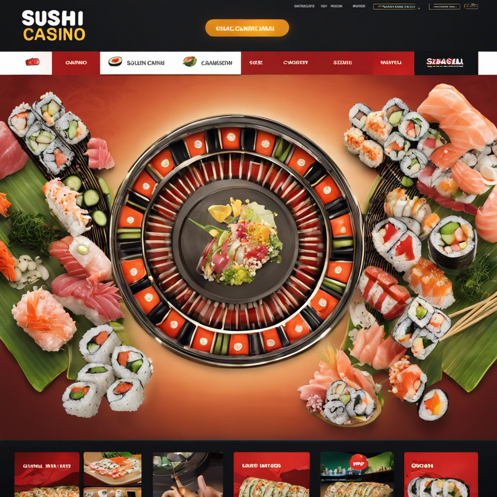
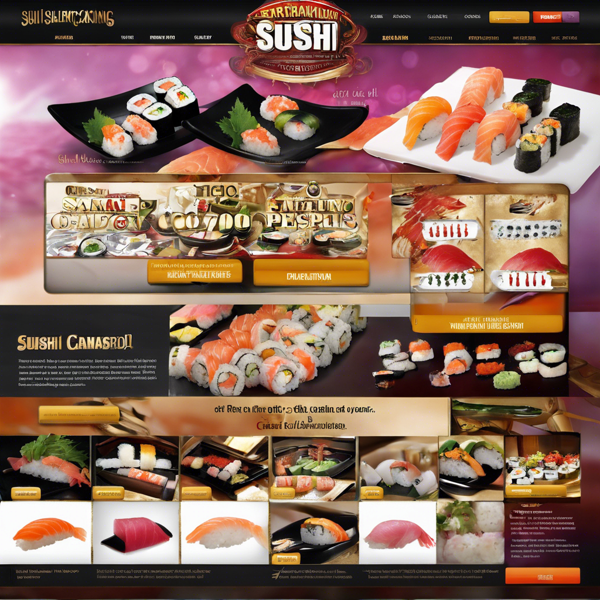
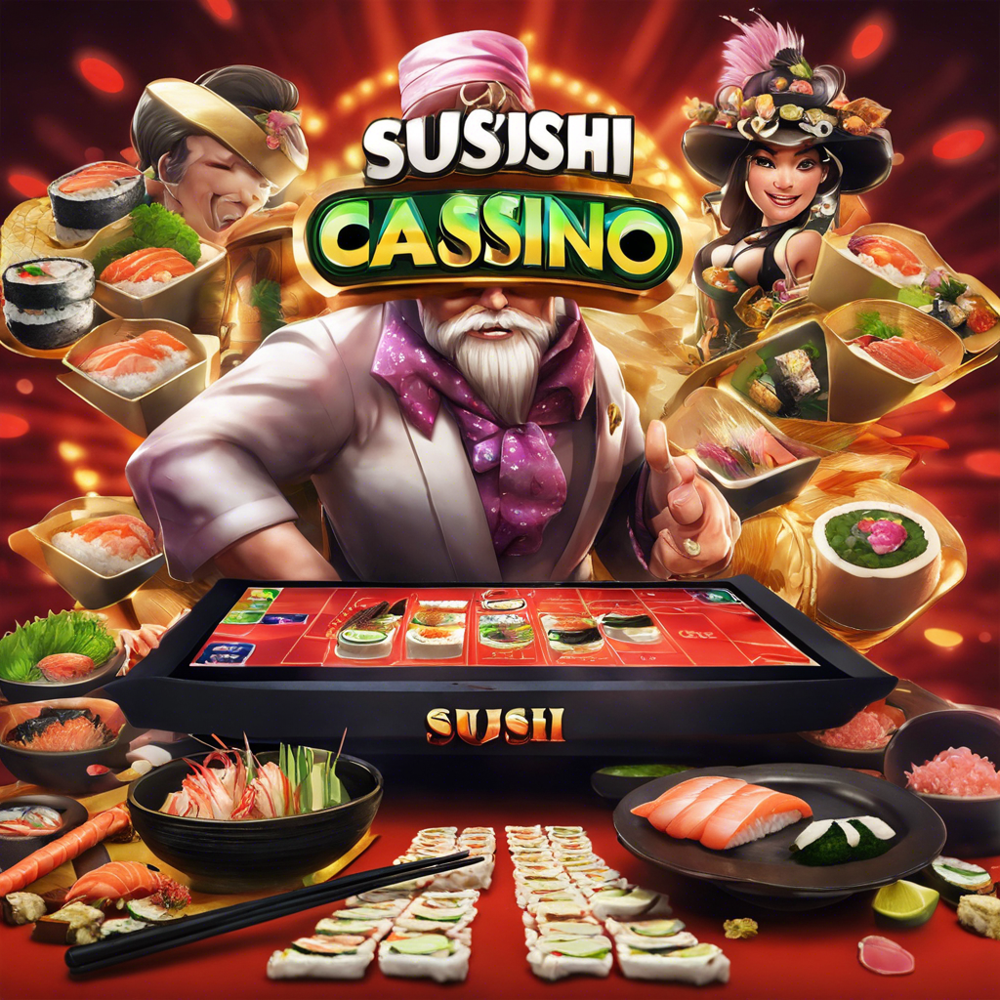
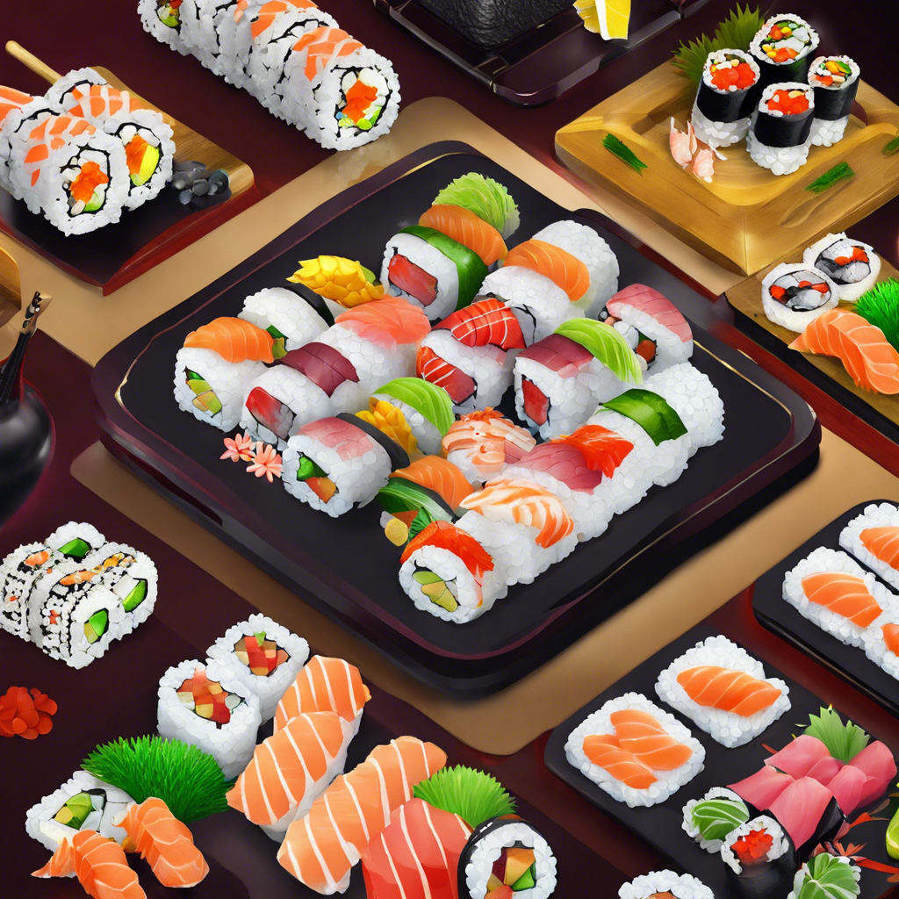
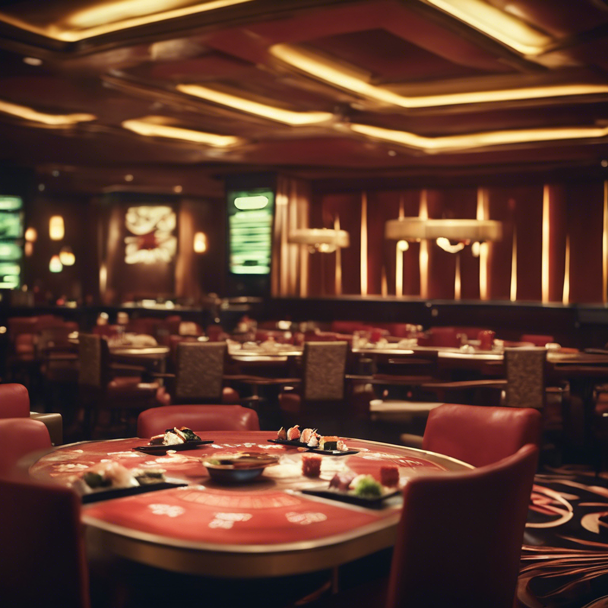

Sushi e Cassinos: A Experiência Única do Brasil
Saboreie sushi em cassinos brasileiros, uma fusão emocionante de sabores e entretenimento.
Sushi e Cassinos: Uma Experiência de Sabores e Diversão no Brasil
Desfrute do sushi em cassinos brasileiros, uma fusão emocionante que cativa os sentidos e proporciona
momentos
únicos de prazer gastronômico.
DAFTAR
LOGIN
Saboreie sushi em cassinos brasileiros, onde a excelência culinária encontra a emoção dos jogos de azar. Essa
mistura
única oferece uma experiência cativante, que combina sabores sofisticados com diversão emocionante, criando
momentos
memoráveis para os visitantes.

Desfrute de sushi em cassinos brasileiros, uma fusão deliciosa de sabores sofisticados e entretenimento
emocionante. No
Brasil, essa combinação oferece uma experiência única, onde os paladares refinados se encontram com a
adrenalina dos
jogos de azar, proporcionando momentos memoráveis de prazer gastronômico e diversão.
DAFTAR
LOGIN
Sushi e Cassinos: Uma Fusão de Sabores e Entretenimento no Brasil

Desfrute da experiência única de saborear sushi em cassinos brasileiros, onde a culinária japonesa se encontra
com a
emoção dos jogos de azar. Essa combinação oferece uma jornada sensorial irresistível, onde os paladares
refinados são
agraciados com a excelência gastronômica enquanto se entregam à diversão dos cassinos. No Brasil, essa fusão
de sabores
sofisticados e entretenimento emocionante cria momentos memoráveis e envolventes para os visitantes,
proporcionando uma
experiência gastronômica e de diversão incomparável.
DAFTAR
LOGIN
Sabor e Sorte: O Encanto do Sushi nos Cassinos Brasileiros
Em meio ao brilho dos cassinos brasileiros, o sushi se destaca como uma opção gastronômica sofisticada,
oferecendo uma
experiência culinária única. Com uma variedade de pratos criativos e frescos, os visitantes podem saborear a
fusão de
sabores exóticos enquanto desfrutam da emoção dos jogos de azar.
O Brasil, conhecido por sua rica diversidade cultural, abraça a culinária japonesa de maneira única,
incorporando
ingredientes locais e técnicas de preparo inovadoras. Nos cassinos, essa fusão culinária ganha vida,
oferecendo aos
clientes uma experiência gastronômica memorável.
Além de satisfazer os paladares mais exigentes, os cassinos brasileiros proporcionam uma atmosfera envolvente
e
emocionante. Desde mesas de jogos vibrantes até shows ao vivo e entretenimento de classe mundial, os
visitantes têm uma
experiência completa de diversão e prazer.
Com a popularidade crescente do sushi e dos cassinos, essa combinação única continua a atrair tanto os
moradores locais
quanto os turistas. É uma verdadeira celebração de sabores, sorte e diversão, que torna cada visita aos
cassinos
brasileiros uma experiência inesquecível.
DAFTAR
LOGIN
O Impacto dos Apps na Sociedade Brasileira

Os aplicativos revolucionaram a maneira como os brasileiros se comunicam, trabalham, e se divertem,
desempenhando um
papel fundamental na vida cotidiana. Com uma variedade de opções disponíveis, desde transporte até compras
online, os
aplicativos se tornaram uma ferramenta essencial para a conveniência e eficiência dos usuários no Brasil.
Sushi MOBILE APK
Sushi nos Cassinos: Uma Experiência Brasileira
Desfrute do sushi em cassinos brasileiros, uma fusão irresistível de sabores e entretenimento emocionante.
Sushi LINK ALTERNATIF
